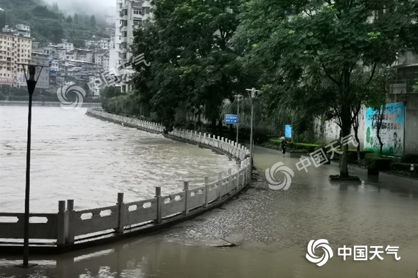
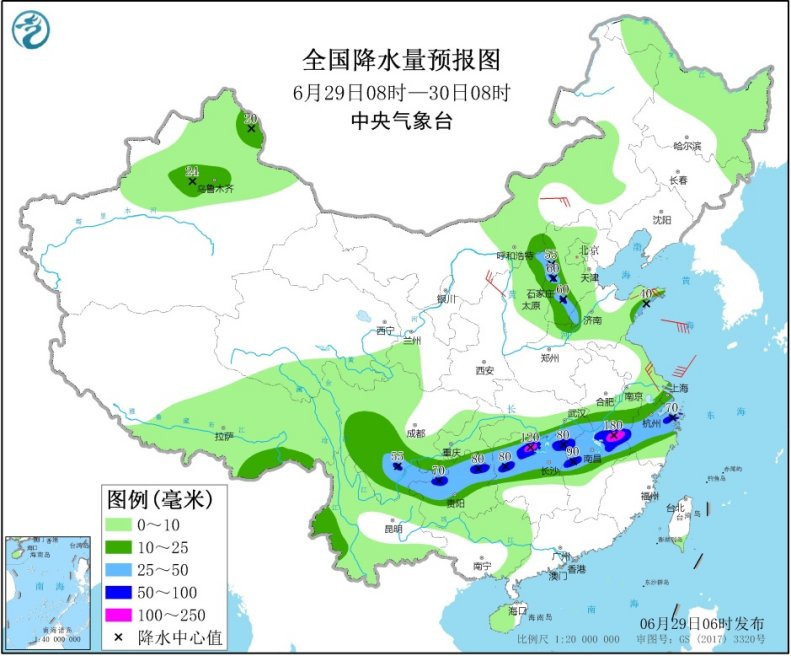

中国天气网讯 今明天（29日至30日），南方强降雨主要集中在贵州到江南北部一线，降水强度有所减弱；同时，北方的华北、黄淮等地多雷雨天气。气温方面，江南、华南等地高温高湿的桑拿天还将持续。

昨天，南方最强降雨集中影响江淮等地，北方雷雨增多。监测显示，昨天江苏、安徽北部和西部、湖北东北部和南部、湖南北部、贵州西北部等地部分地区出现暴雨或大暴雨（100～188毫米），上述地区最大小时降雨量30～78毫米；陕西北部、内蒙古中部偏南地区、山西北部、河北西部和南部、山东西北部、黑龙江中部、吉林北部及新疆伊犁河谷等地出现大雨或暴雨，河北石家庄和保定、山西阳泉等局地大暴雨（100～127毫米），上述部分地区出现8～10级雷暴大风天气，河北中南部局地出现冰雹。
今明天，南方强降雨主要集中在贵州到江南北部一线，降水强度有所减弱；同时，北方的华北、黄淮等地多雷雨天气。中央气象台预计，今天浙江中部、安徽南部、湖北东南部、江西北部、湖南北部、贵州北部、云南东北部、四川南部以及山西北部、河北西部和南部、山东西部和东南部等地的部分地区有大到暴雨，其中，江西东北部、湖南北部等地局地有大暴雨（100～180毫米）。内蒙古中部、陕西北部、山东半岛等地的部分地区有4～5级风。

不仅白天热，晚上这一带气温也普遍在26-27℃，部分地区甚至30℃以上，像广西北海，6月22-27日已经连续6天最低气温在30℃以上，创出当地最长连续30℃+纪录，闷热贯穿一整天，大家要持续做好防暑准备。
编辑：宋华成